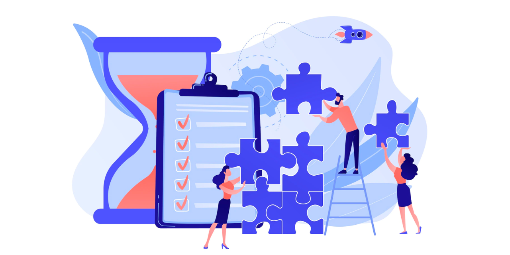

Gestion de projet
La gestion de projet englobe la coordination efficace des ressources, des délais et des objectifs pour atteindre les résultats escomptés. Elle requiert la planification minutieuse, l'allocation judicieuse des tâches et la supervision constante pour assurer le bon déroulement des initiatives. Une gestion de projet réussie favorise la collaboration, la résolution proactive des problèmes, la prise de décision éclairée et l'atteinte des objectifs fixés.
Dans le contexte actuel marqué par la complexité croissante des initiatives entrepreneuriales et technologiques, la gestion de projet revêt une importance capitale. Les entreprises doivent naviguer à travers des défis changeants, des budgets limités et des délais serrés pour rester compétitives sur le marché mondial.

Dans mes différentes entreprises ou projets, j'ai constamment mis en pratique cette compétence. La gestion de projet a été un élément clé de mes démarches, que ce soit dans mes projets académiques, mes stages en entreprise ou mes initiatives personnelles. J'ai acquis la capacité à élaborer des plans détaillés, à coordonner les activités des équipes, à identifier et à atténuer les risques, ainsi qu'à maintenir une communication transparente tout au long du processus.
Dans le cadre du projet Poketech, qui visait à lever des fonds pour une association, j'ai été impliqué dans la mise en place du budget prévisionnel, l'élaboration du planning ainsi que dans d'autres aspects de gestion.
Dans mon parcours professionnel, je considère le développement de cette compétence comme une priorité. Bien que j'aie accumulé un ensemble de connaissances significatives tout au long de mes études et de mes premières expériences en entreprise, je suis convaincu qu'il est essentiel d'explorer diverses méthodes et formations pour perfectionner mes aptitudes.